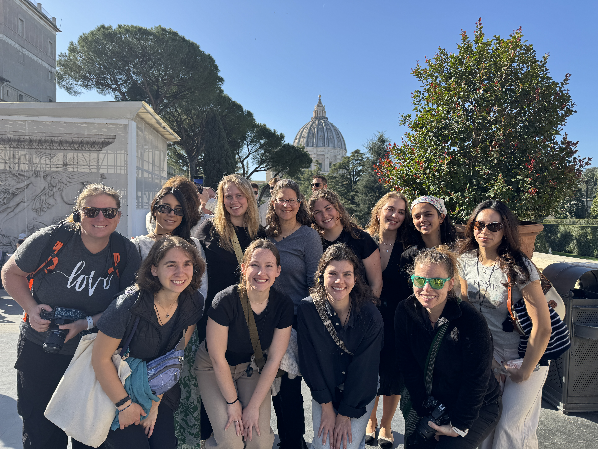

About Rome
The capital of Italy, Rome, is full of ancient ruins and modern architecture. It preserves the history of the former Roman Empire and shares its history with travelers and learners. It also holds the Vatican City, where the Pope resides, making it the headquarters of the Roman Catholic Church. Rome's historic center is listed by UNESCO as a World Heritage Site, and the city is well known for its museums, architecture, religious buildings, and archaeological sites.
For my abroad experience, I spent two weeks exploring the city of Rome, interviewing locals and learning more about how to be a kind traveler during Jubilee and the once in a lifetime Caravaggio 2025 exhibition. Here, you can find the journalistic article and photo essay I created while there.
Rome Resources
Article: The Legacy of Ancient Rome
An exploration of Rome's ancient history and its enduring influence on Western civilization.
Read ArticlePhoto Essay: Rome's Monumental Beauty
A visual journey through the ancient ruins, Renaissance masterpieces, and Baroque treasures of Rome.
View Photo EssayPreview: The Legacy of Ancient Rome
Preview: Rome's Monumental Beauty
Rome Gallery
